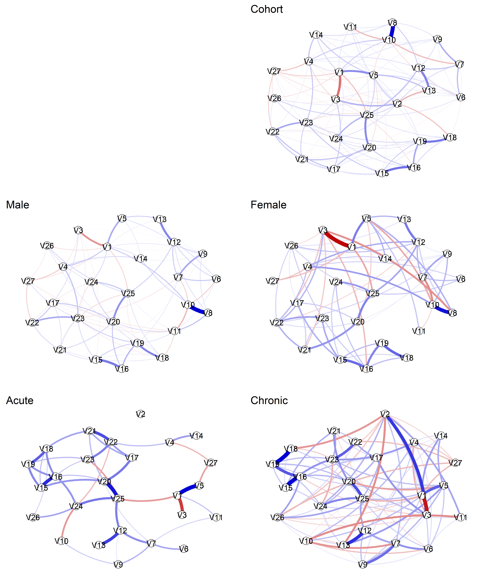
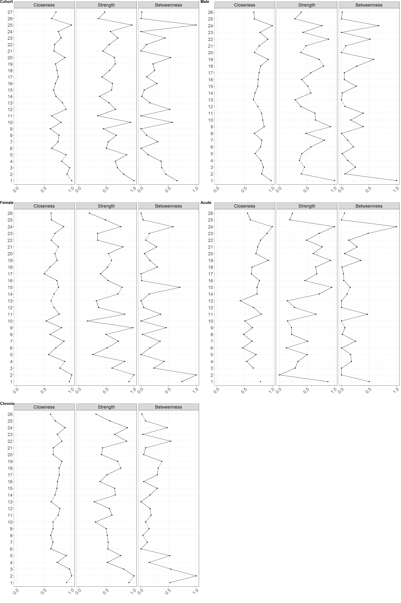
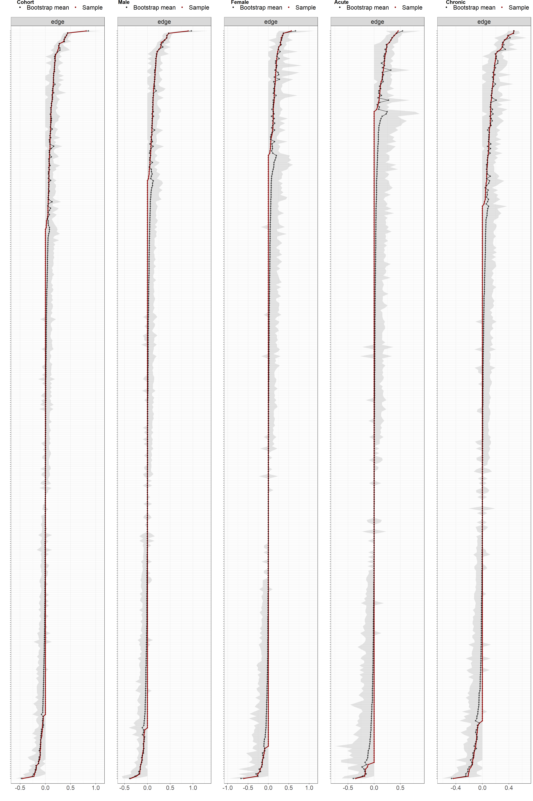
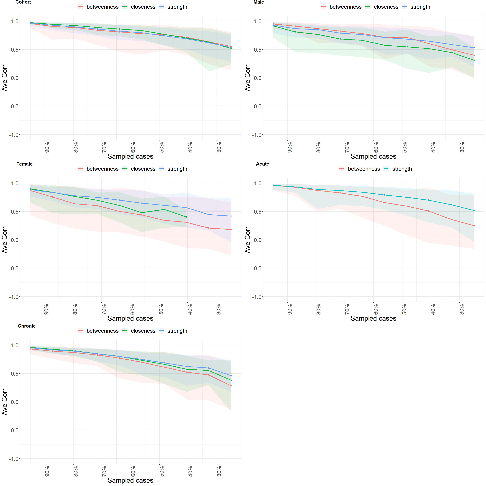

Last updated: 2021-09-16
Checks: 7 0
Knit directory: covidPain/
This reproducible R Markdown analysis was created with workflowr (version 1.6.2). The Checks tab describes the reproducibility checks that were applied when the results were created. The Past versions tab lists the development history.
Great! Since the R Markdown file has been committed to the Git repository, you know the exact version of the code that produced these results.
Great job! The global environment was empty. Objects defined in the global environment can affect the analysis in your R Markdown file in unknown ways. For reproduciblity it’s best to always run the code in an empty environment.
The command set.seed(20210714) was run prior to running the code in the R Markdown file. Setting a seed ensures that any results that rely on randomness, e.g. subsampling or permutations, are reproducible.
Great job! Recording the operating system, R version, and package versions is critical for reproducibility.
Nice! There were no cached chunks for this analysis, so you can be confident that you successfully produced the results during this run.
Great job! Using relative paths to the files within your workflowr project makes it easier to run your code on other machines.
Great! You are using Git for version control. Tracking code development and connecting the code version to the results is critical for reproducibility.
The results in this page were generated with repository version 26e2139. See the Past versions tab to see a history of the changes made to the R Markdown and HTML files.
Note that you need to be careful to ensure that all relevant files for the analysis have been committed to Git prior to generating the results (you can use wflow_publish or wflow_git_commit). workflowr only checks the R Markdown file, but you know if there are other scripts or data files that it depends on. Below is the status of the Git repository when the results were generated:
Ignored files:
Ignored: .Rproj.user/
Ignored: data/data.xlsx
Untracked files:
Untracked: output/res.RDS
Note that any generated files, e.g. HTML, png, CSS, etc., are not included in this status report because it is ok for generated content to have uncommitted changes.
These are the previous versions of the repository in which changes were made to the R Markdown (analysis/2-network.Rmd) and HTML (docs/2-network.html) files. If you’ve configured a remote Git repository (see ?wflow_git_remote), click on the hyperlinks in the table below to view the files as they were in that past version.
| File | Version | Author | Date | Message |
|---|---|---|---|---|
| Rmd | 26e2139 | Bernard | 2021-09-16 | updated analysis with subgroups |
| Rmd | ad325a2 | Bernard | 2021-09-02 | Added network analysis |
| html | ad325a2 | Bernard | 2021-09-02 | Added network analysis |
# Tidying
library (tidyverse)
library (skimr)
# Network analysis
library (qgraph)
library (bootnet)
library (mgm)
library (huge)
# Office
library (officer)
library (flextable)
# Plot
library (cowplot)
library (plotrix)
# Parallel
library(foreach)
library(doParallel)
# HTML table
library (kableExtra)df <- readRDS("output/df_clean.RDS")skim (df)| Name | df |
| Number of rows | 648 |
| Number of columns | 41 |
| _______________________ | |
| Column type frequency: | |
| character | 15 |
| numeric | 26 |
| ________________________ | |
| Group variables | None |
Variable type: character
| skim_variable | n_missing | complete_rate | min | max | empty | n_unique | whitespace |
|---|---|---|---|---|---|---|---|
| gender | 0 | 1 | 1 | 1 | 0 | 2 | 0 |
| marital_status | 0 | 1 | 1 | 1 | 0 | 2 | 0 |
| education | 0 | 1 | 1 | 1 | 0 | 2 | 0 |
| comorbidities | 0 | 1 | 2 | 3 | 0 | 2 | 0 |
| pain_duration | 0 | 1 | 6 | 7 | 0 | 2 | 0 |
| chronicity | 0 | 1 | 5 | 7 | 0 | 2 | 0 |
| frequency | 0 | 1 | 5 | 12 | 0 | 4 | 0 |
| change_in_pain | 0 | 1 | 5 | 9 | 0 | 4 | 0 |
| evolution | 0 | 1 | 1 | 1 | 0 | 2 | 0 |
| change_in_tx | 0 | 1 | 2 | 3 | 0 | 2 | 0 |
| job | 0 | 1 | 1 | 1 | 0 | 2 | 0 |
| job_changes | 0 | 1 | 8 | 11 | 0 | 3 | 0 |
| health_restrictions | 0 | 1 | 2 | 2 | 0 | 2 | 0 |
| chiropractic | 0 | 1 | 2 | 3 | 0 | 2 | 0 |
| length_of_chiro_care | 0 | 1 | 6 | 7 | 0 | 2 | 0 |
Variable type: numeric
| skim_variable | n_missing | complete_rate | mean | sd | p0 | p25 | p50 | p75 | p100 | hist |
|---|---|---|---|---|---|---|---|---|---|---|
| age | 0 | 1 | 46.97 | 12.51 | 17 | 38 | 47 | 56 | 87 | <U+2582><U+2587><U+2587><U+2583><U+2581> |
| cohab | 0 | 1 | 1.81 | 1.04 | 0 | 1 | 2 | 3 | 3 | <U+2583><U+2586><U+2581><U+2586><U+2587> |
| number_pain_sites | 0 | 1 | 3.24 | 2.06 | 1 | 2 | 3 | 4 | 9 | <U+2587><U+2587><U+2582><U+2581><U+2581> |
| pain_intensity | 0 | 1 | 5.32 | 2.16 | 0 | 4 | 6 | 7 | 10 | <U+2583><U+2585><U+2587><U+2587><U+2581> |
| interference | 0 | 1 | 17.95 | 15.37 | 0 | 5 | 14 | 30 | 60 | <U+2587><U+2583><U+2583><U+2582><U+2581> |
| pcs | 0 | 1 | 6.77 | 3.28 | 0 | 4 | 7 | 9 | 15 | <U+2585><U+2587><U+2587><U+2583><U+2581> |
| tsk | 0 | 1 | 25.53 | 5.54 | 11 | 22 | 26 | 29 | 43 | <U+2582><U+2583><U+2587><U+2582><U+2581> |
| sad | 0 | 1 | 4.56 | 3.13 | 0 | 2 | 5 | 7 | 10 | <U+2587><U+2583><U+2585><U+2585><U+2583> |
| worry | 0 | 1 | 5.49 | 3.06 | 0 | 2 | 6 | 8 | 10 | <U+2587><U+2583><U+2586><U+2587><U+2586> |
| lonely | 0 | 1 | 2.02 | 2.60 | 0 | 0 | 1 | 3 | 10 | <U+2587><U+2582><U+2581><U+2581><U+2581> |
| anger | 0 | 1 | 4.21 | 3.30 | 0 | 1 | 4 | 7 | 10 | <U+2587><U+2582><U+2583><U+2583><U+2582> |
| helpless | 0 | 1 | 5.07 | 3.39 | 0 | 2 | 5 | 8 | 10 | <U+2587><U+2582><U+2583><U+2585><U+2585> |
| anxiety | 0 | 1 | 3.19 | 3.10 | 0 | 0 | 2 | 6 | 10 | <U+2587><U+2582><U+2582><U+2582><U+2581> |
| surprise | 0 | 1 | 2.56 | 2.81 | 0 | 0 | 2 | 5 | 10 | <U+2587><U+2582><U+2582><U+2582><U+2581> |
| relief | 0 | 1 | 1.70 | 2.30 | 0 | 0 | 1 | 3 | 10 | <U+2587><U+2581><U+2581><U+2581><U+2581> |
| hope | 0 | 1 | 4.34 | 3.11 | 0 | 2 | 4 | 7 | 10 | <U+2587><U+2583><U+2585><U+2583><U+2583> |
| stress_covid | 0 | 1 | 7.05 | 2.53 | 0 | 6 | 8 | 9 | 10 | <U+2582><U+2582><U+2583><U+2587><U+2586> |
| stress_rest | 0 | 1 | 6.51 | 2.53 | 0 | 5 | 7 | 8 | 10 | <U+2582><U+2583><U+2586><U+2587><U+2586> |
| my_health | 0 | 1 | 4.69 | 3.34 | 0 | 1 | 5 | 8 | 10 | <U+2587><U+2583><U+2585><U+2583><U+2583> |
| economy | 0 | 1 | 4.33 | 3.39 | 0 | 1 | 4 | 7 | 10 | <U+2587><U+2582><U+2583><U+2583><U+2583> |
| food | 0 | 1 | 2.07 | 2.57 | 0 | 0 | 1 | 4 | 10 | <U+2587><U+2582><U+2582><U+2581><U+2581> |
| resources | 0 | 1 | 2.08 | 2.52 | 0 | 0 | 1 | 3 | 10 | <U+2587><U+2582><U+2582><U+2581><U+2581> |
| loved_ones | 0 | 1 | 7.13 | 3.18 | 0 | 5 | 8 | 10 | 10 | <U+2583><U+2581><U+2582><U+2583><U+2587> |
| gad | 0 | 1 | 5.45 | 4.30 | 0 | 2 | 5 | 7 | 21 | <U+2587><U+2586><U+2582><U+2581><U+2581> |
| ious | 0 | 1 | 29.17 | 10.19 | 12 | 21 | 28 | 36 | 60 | <U+2586><U+2587><U+2585><U+2583><U+2581> |
| se | 0 | 1 | 73.62 | 14.15 | 10 | 65 | 74 | 84 | 100 | <U+2581><U+2581><U+2583><U+2587><U+2585> |
vars_keep <- c("age",
"gender",
"marital_status",
"education",
"comorbidities",
"number_pain_sites",
"pain_intensity",
"chronicity",
"frequency",
"evolution",
"change_in_tx",
"pcs",
"tsk",
"job",
"sad",
"worry",
"lonely",
"anger",
"helpless",
"anxiety",
"surprise",
"relief",
"hope",
"stress_covid",
"gad",
"ious",
"se")
df_sub <- df %>%
dplyr::select (all_of (vars_keep))# Sex
df_sub_m <- df_sub %>%
filter (gender == "M") %>%
select (-gender)
df_sub_f <- df_sub %>%
filter (gender == "H")%>%
select (-gender)
nrow(df_sub_m) + nrow(df_sub_f) == nrow (df_sub)[1] TRUE# Chronicity
df_sub_c <- df_sub %>%
filter (chronicity == "Chronic")%>%
select (-chronicity)
df_sub_a <- df_sub %>%
filter (chronicity == "Acute")%>%
select (-chronicity)
nrow(df_sub_a) + nrow(df_sub_c) == nrow (df_sub)[1] TRUEdf_list <- list (df = df_sub,
male = df_sub_m,
fema = df_sub_f,
acute = df_sub_a,
chronic = df_sub_c)stats_type <- c("strength", "betweenness", "expectedInfluence", "closeness")
my_huge <- function (df, col_type) {
df[, col_type == "g"] <- huge::huge.npn (df[, col_type == "g"])
return (df)
}
nlvls_list <- col_type_list <- var_names_list <- new_name_list <- vector ("list", length (df_list))
for (n in seq_along(df_list)) {
nlvls_list[[n]] <- df_list[[n]] %>%
map_if(is.numeric, function (x) x =1 ) %>%
map_if(is.character, n_distinct) %>%
unlist ()
col_type_list[[n]] <- df_list[[n]] %>%
map_chr(class)
col_type_list[[n]] <- ifelse (col_type_list[[n]] == "numeric", "g", "c")
df_list[[n]] <- df_list[[n]] %>%
mutate_if (is.character, factor) %>%
mutate_if (is.factor, as.numeric) %>%
mutate_if (nlvls_list[[n]] == 2, ~.x-1)
var_names_list[[n]] <- names(df_list[[n]])
}
new_names <- paste0("V", seq(1:ncol (df_list[[1]])))
names(new_names) <- names(df_list[[1]])
names(df_list[[1]]) <- new_names
names(df_list[[2]]) <- new_names[names(new_names) %in% names(df_list[[2]])]
names(df_list[[3]]) <- new_names[names(new_names) %in% names(df_list[[3]])]
names(df_list[[4]]) <- new_names[names(new_names) %in% names(df_list[[4]])]
names(df_list[[5]]) <- new_names[names(new_names) %in% names(df_list[[5]])]# Network analysis
set.seed(1)
nw_list <- centr_list <- centr_stb_list <- edgewts_list <- vector ("list", length (df_list))
df_list <- list (df = df_list, col_type = col_type_list) %>%
pmap (my_huge)
for (n in seq_along(df_list)) {
nw_list[[n]] <- estimateNetwork (data = df_list[[n]],
default = "mgm",
type= col_type_list[[n]],
level= nlvls_list[[n]],
criterion = "CV",# we used cross validation to select optimal tuning parameter
nFolds = 10, # using 10 folds
order = 2,# we only include second order interactions
binarySign = TRUE,
scale = TRUE,
.pbar = FALSE,
.signInfo = FALSE)
}
# Centrality stability
B <- 1000
registerDoParallel(cores = 3)
centr_stb_list <- foreach (n = 1:length (df_list), .packages = "bootnet") %do%
bootnet (nw_list[[n]],
nBoots = B,
type = "case",
statistics = stats_type)
stopImplicitCluster()
# Edgeweights stability
registerDoParallel(cores = 3)
edgewts_list <- foreach (n = 1:length (df_list), .packages = "bootnet") %do%
bootnet (nw_list[[n]],
nBoots = B)
stopImplicitCluster()res <- list (data = df_list,
names = var_names_list,
nw = nw_list,
stb = centr_stb_list,
wts = edgewts_list,
original = df_sub)
saveRDS(res,
"output/res.RDS")res <- readRDS("output/res.RDS")
list2env(res,globalenv())<environment: R_GlobalEnv>rm(res)par (mfrow = c(3,2))
plot.new()
# addtable2plot(0,
# -15,
# data.frame (var = names (df_list[[1]]),
# names = var_names_list[[1]]),
# xpad=0,
# ypad=0,
# bty='o',
# cex = 1,
# display.rownames = FALSE,
# hlines = TRUE,
# vlines = TRUE)
plot (nw[[1]], title = "Cohort", label.cex = 3, vsize = 5, curve = 0.4, curveAll = TRUE, title.cex = 5)
p2 <- plot (nw[[2]], title = "Male", label.cex = 3, vsize = 5, curve = 0.4, curveAll = TRUE, title.cex = 5)
p3 <- plot (nw[[3]], title = "Female", layout = p2$layout, label.cex = 3, vsize = 5, curve = 0.4, curveAll = TRUE, title.cex = 5)
p4 <- plot (nw[[4]], title = "Acute", label.cex = 3, vsize = 5, curve = 0.4, curveAll = TRUE, title.cex = 5)
p5 <- plot (nw[[5]], title = "Chronic", layout = p4$layout, label.cex = 3, vsize = 5, curve = 0.4, curveAll = TRUE, title.cex = 5)
var_df <- data.frame (var = names (df_list[[1]]),
names = var_names_list[[1]])
var_df %>%
kbl(caption = "Variable names") %>%
kable_styling() %>%
scroll_box(width = "500px", height = "500px")| var | names |
|---|---|
| V1 | age |
| V2 | gender |
| V3 | marital_status |
| V4 | education |
| V5 | comorbidities |
| V6 | number_pain_sites |
| V7 | pain_intensity |
| V8 | chronicity |
| V9 | frequency |
| V10 | evolution |
| V11 | change_in_tx |
| V12 | pcs |
| V13 | tsk |
| V14 | job |
| V15 | sad |
| V16 | worry |
| V17 | lonely |
| V18 | anger |
| V19 | helpless |
| V20 | anxiety |
| V21 | surprise |
| V22 | relief |
| V23 | hope |
| V24 | stress_covid |
| V25 | gad |
| V26 | ious |
| V27 | se |
c_fig <- map (nw, centralityPlot, include = c("Closeness", "Strength", "Betweenness"),
print = FALSE, scale = "relative") %>%
map (~.x +
scale_x_continuous(breaks= c(0, 0.5, 1), lim = c(0, 1)) +
theme(text = element_text(size = 20),
axis.text.x = element_text(angle = 45, hjust = 1)),
include = "all", print = FALSE, scale = "relative")
#tiff(width = 15, height = 15, units = "in", res = 100, file = "output/odi_strength.tiff")
cowplot::plot_grid(plotlist = c_fig,
labels = c("Cohort","Male", "Female", "Acute", "Chronic" ),
vjust = 1,
hjust = 0,
ncol = 2)
#dev.off()w_fig <- map (wts, plot, order = "sample", CIstyle = "quantiles", labels = FALSE)
w_fig <- map (w_fig, ~.x +
theme(text = element_text(size = 20)),
include = "all", print = FALSE, scale = "relative")
cowplot::plot_grid(plotlist = w_fig,
labels = c("Cohort","Male", "Female", "Acute", "Chronic" ),
vjust = 1,
hjust = -1,
ncol = 5,
nrow = 1)
# Plot centrality stability
s_fig <- map (stb, plot, statistics = c("closeness", "strength", "betweenness"))
s_fig <- map (s_fig, ~.x +
ylab ("Ave Corr") +
theme(text = element_text(size = 20),
axis.text.x = element_text(angle = 90, hjust = 1)),
include = "all", print = FALSE, scale = "relative")
#tiff(width = 15, height = 15, units = "in", res = 100, file = "output/odi_stability.tiff")
cowplot::plot_grid(plotlist = s_fig,
labels = c("Cohort","Male", "Female", "Acute", "Chronic" ),
vjust = 1,
hjust = -1,
ncol = 2,
nrow = 3)
cs_coef <- tibble (data = c("Cohort","Male", "Female", "Acute", "Chronic" ),
stb = stb) %>%
mutate (cor_stb = map (stb,
corStability)) %>%
select (data, cor_stb) %>%
unnest (cols = cor_stb) %>%
ungroup() %>%
mutate (measure = rep (c("betweenness", "closeness", "expectedInfluence", "strength"), 5)) %>%
mutate (CS = round (cor_stb, 2)) %>%
filter (measure %in% c("betweenness", "closeness","strength")) %>%
dplyr::select (data, measure, CS)=== Correlation Stability Analysis ===
Sampling levels tested:
nPerson Drop% n
1 162 75.0 106
2 212 67.3 101
3 263 59.4 76
4 313 51.7 100
5 364 43.8 100
6 414 36.1 102
7 464 28.4 112
8 515 20.5 89
9 565 12.8 110
10 616 4.9 104
Maximum drop proportions to retain correlation of 0.7 in at least 95% of the samples:
betweenness: 0.205
- For more accuracy, run bootnet(..., caseMin = 0.128, caseMax = 0.284)
closeness: 0.284
- For more accuracy, run bootnet(..., caseMin = 0.205, caseMax = 0.361)
expectedInfluence: 0.673
- For more accuracy, run bootnet(..., caseMin = 0.594, caseMax = 0.75)
strength: 0.361
- For more accuracy, run bootnet(..., caseMin = 0.284, caseMax = 0.438)
Accuracy can also be increased by increasing both 'nBoots' and 'caseN'.=== Correlation Stability Analysis ===
Sampling levels tested:
nPerson Drop% n
1 114 74.9 101
2 149 67.3 100
3 185 59.3 91
4 220 51.6 89
5 255 44.0 97
6 291 36.0 117
7 326 28.4 112
8 361 20.7 104
9 397 12.7 86
10 432 5.1 103
Maximum drop proportions to retain correlation of 0.7 in at least 95% of the samples:
betweenness: 0.207
- For more accuracy, run bootnet(..., caseMin = 0.127, caseMax = 0.284)
closeness: 0.051 (CS-coefficient is lowest level tested)
- For more accuracy, run bootnet(..., caseMin = 0, caseMax = 0.127)
expectedInfluence: 0.673
- For more accuracy, run bootnet(..., caseMin = 0.593, caseMax = 0.749)
strength: 0.207
- For more accuracy, run bootnet(..., caseMin = 0.127, caseMax = 0.284)
Accuracy can also be increased by increasing both 'nBoots' and 'caseN'.=== Correlation Stability Analysis ===
Sampling levels tested:
nPerson Drop% n
1 48 75.1 78
2 63 67.4 94
3 78 59.6 93
4 93 51.8 99
5 108 44.0 95
6 123 36.3 104
7 138 28.5 114
8 153 20.7 122
9 168 13.0 97
10 183 5.2 104
Maximum drop proportions to retain correlation of 0.7 in at least 95% of the samples:
betweenness: 0
- For more accuracy, run bootnet(..., caseMin = 0, caseMax = 0.052)
closeness: 0
- For more accuracy, run bootnet(..., caseMin = 0, caseMax = 0.052)
expectedInfluence: 0.518
- For more accuracy, run bootnet(..., caseMin = 0.44, caseMax = 0.596)
strength: 0.052 (CS-coefficient is lowest level tested)
- For more accuracy, run bootnet(..., caseMin = 0, caseMax = 0.13)
Accuracy can also be increased by increasing both 'nBoots' and 'caseN'.=== Correlation Stability Analysis ===
Sampling levels tested:
nPerson Drop% n
1 50 75.1 68
2 66 67.2 112
3 82 59.2 100
4 97 51.7 110
5 113 43.8 111
6 128 36.3 95
7 144 28.4 90
8 160 20.4 99
9 175 12.9 122
10 191 5.0 93
Maximum drop proportions to retain correlation of 0.7 in at least 95% of the samples:
betweenness: 0.129
- For more accuracy, run bootnet(..., caseMin = 0.05, caseMax = 0.204)
closeness: 0
- For more accuracy, run bootnet(..., caseMin = 0, caseMax = 0.05)
expectedInfluence: 0.517
- For more accuracy, run bootnet(..., caseMin = 0.438, caseMax = 0.592)
strength: 0.204
- For more accuracy, run bootnet(..., caseMin = 0.129, caseMax = 0.284)
Accuracy can also be increased by increasing both 'nBoots' and 'caseN'.=== Correlation Stability Analysis ===
Sampling levels tested:
nPerson Drop% n
1 112 74.9 92
2 147 67.1 96
3 181 59.5 102
4 216 51.7 102
5 251 43.8 92
6 286 36.0 104
7 320 28.4 105
8 355 20.6 97
9 390 12.8 114
10 425 4.9 96
Maximum drop proportions to retain correlation of 0.7 in at least 95% of the samples:
betweenness: 0.206
- For more accuracy, run bootnet(..., caseMin = 0.128, caseMax = 0.284)
closeness: 0.206
- For more accuracy, run bootnet(..., caseMin = 0.128, caseMax = 0.284)
expectedInfluence: 0.595
- For more accuracy, run bootnet(..., caseMin = 0.517, caseMax = 0.671)
strength: 0.284
- For more accuracy, run bootnet(..., caseMin = 0.206, caseMax = 0.36)
Accuracy can also be increased by increasing both 'nBoots' and 'caseN'.cs_coef %>%
knitr::kable (caption = "Stability of centrality indices") %>%
kable_styling()| data | measure | CS |
|---|---|---|
| Cohort | betweenness | 0.21 |
| Cohort | closeness | 0.28 |
| Cohort | strength | 0.36 |
| Male | betweenness | 0.21 |
| Male | closeness | 0.05 |
| Male | strength | 0.21 |
| Female | betweenness | 0.00 |
| Female | closeness | 0.00 |
| Female | strength | 0.05 |
| Acute | betweenness | 0.13 |
| Acute | closeness | 0.00 |
| Acute | strength | 0.20 |
| Chronic | betweenness | 0.21 |
| Chronic | closeness | 0.21 |
| Chronic | strength | 0.28 |
sessionInfo()R version 4.0.2 (2020-06-22)
Platform: x86_64-w64-mingw32/x64 (64-bit)
Running under: Windows 10 x64 (build 19042)
Matrix products: default
locale:
[1] LC_COLLATE=English_United Kingdom.1252
[2] LC_CTYPE=English_United Kingdom.1252
[3] LC_MONETARY=English_United Kingdom.1252
[4] LC_NUMERIC=C
[5] LC_TIME=English_United Kingdom.1252
attached base packages:
[1] parallel stats graphics grDevices utils datasets methods
[8] base
other attached packages:
[1] kableExtra_1.3.1 doParallel_1.0.16 iterators_1.0.13 foreach_1.5.1
[5] plotrix_3.7-8 cowplot_1.1.1 flextable_0.6.1 officer_0.3.16
[9] huge_1.3.4.1 mgm_1.2-10 bootnet_1.4.6 qgraph_1.6.5
[13] skimr_2.1.2 forcats_0.5.0 stringr_1.4.0 dplyr_1.0.2
[17] purrr_0.3.4 readr_1.4.0 tidyr_1.1.2 tibble_3.0.4
[21] ggplot2_3.3.3 tidyverse_1.3.0 workflowr_1.6.2
loaded via a namespace (and not attached):
[1] R.utils_2.10.1 tidyselect_1.1.0 htmlwidgets_1.5.3
[4] grid_4.0.2 munsell_0.5.0 codetools_0.2-18
[7] withr_2.3.0 colorspace_2.0-0 NetworkToolbox_1.4.1
[10] highr_0.8 knitr_1.30 uuid_0.1-4
[13] rstudioapi_0.13 stats4_4.0.2 labeling_0.4.2
[16] git2r_0.27.1 repr_1.1.0 mnormt_2.0.2
[19] farver_2.0.3 rprojroot_2.0.2 vctrs_0.3.6
[22] generics_0.1.0 xfun_0.25 R6_2.5.0
[25] smacof_2.1-1 reshape_0.8.8 assertthat_0.2.1
[28] promises_1.1.1 scales_1.1.1 nnet_7.3-14
[31] gtable_0.3.0 weights_1.0.1 rlang_0.4.10
[34] systemfonts_0.3.2 splines_4.0.2 wordcloud_2.6
[37] broom_0.7.4.9000 checkmate_2.0.0 yaml_2.2.1
[40] reshape2_1.4.4 abind_1.4-5 modelr_0.1.8
[43] d3Network_0.5.2.1 backports_1.2.1 httpuv_1.5.4
[46] Hmisc_4.4-2 tools_4.0.2 psych_2.0.12
[49] lavaan_0.6-9 ellipsis_0.3.1 RColorBrewer_1.1-2
[52] polynom_1.4-0 Rcpp_1.0.6 plyr_1.8.6
[55] base64enc_0.1-3 ps_1.5.0 rpart_4.1-15
[58] pbapply_1.4-3 haven_2.3.1 cluster_2.1.0
[61] fs_1.5.0 survey_4.0 magrittr_2.0.1
[64] data.table_1.14.0 openxlsx_4.2.3 reprex_0.3.0
[67] tmvnsim_1.0-2 mvtnorm_1.1-1 matrixcalc_1.0-3
[70] whisker_0.4 hms_0.5.3 evaluate_0.14
[73] rio_0.5.16 jpeg_0.1-8.1 readxl_1.3.1
[76] gridExtra_2.3 shape_1.4.5 compiler_4.0.2
[79] ellipse_0.4.2 mice_3.12.0 GGMncv_2.0.0
[82] crayon_1.3.4 R.oo_1.24.0 htmltools_0.5.0
[85] corpcor_1.6.9 later_1.1.0.1 Formula_1.2-4
[88] snow_0.4-3 lubridate_1.7.9.2 DBI_1.1.0
[91] relaimpo_2.2-3 dbplyr_2.0.0 MASS_7.3-53
[94] boot_1.3-25 IsingSampler_0.2.1 Matrix_1.2-18
[97] IsingFit_0.3.1 car_3.0-10 cli_2.2.0
[100] heplots_1.3-7 mitools_2.4 R.methodsS3_1.8.1
[103] gdata_2.18.0 igraph_1.2.6 BDgraph_2.63
[106] pkgconfig_2.0.3 numDeriv_2016.8-1.1 foreign_0.8-81
[109] xml2_1.3.2 pbivnorm_0.6.0 webshot_0.5.2
[112] rvest_0.3.6 digest_0.6.27 rmarkdown_2.10
[115] cellranger_1.1.0 htmlTable_2.1.0 glassoFast_1.0
[118] gdtools_0.2.3 curl_4.3 gtools_3.8.2
[121] rjson_0.2.20 lifecycle_0.2.0 nlme_3.1-151
[124] glasso_1.11 jsonlite_1.7.2 carData_3.0-4
[127] viridisLite_0.3.0 fansi_0.4.1 pillar_1.4.7
[130] lattice_0.20-41 httr_1.4.2 survival_3.2-7
[133] glue_1.4.2 networktools_1.2.3 zip_2.1.1
[136] fdrtool_1.2.16 png_0.1-7 candisc_0.8-3
[139] glmnet_4.1-2 class_7.3-17 stringi_1.5.3
[142] nnls_1.4 latticeExtra_0.6-29 eigenmodel_1.11
[145] e1071_1.7-4